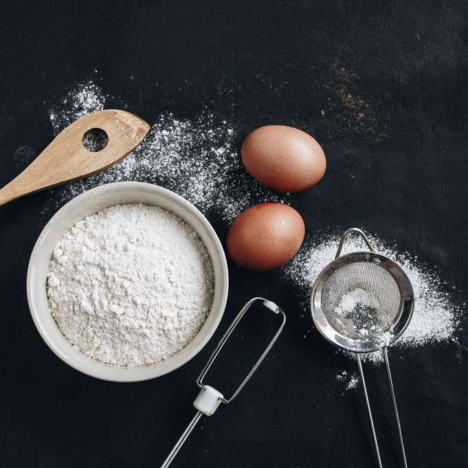

烘焙爱好者
吐司，是英文toast的音译，粤语（广东话）叫多士，实际上就是用长方形带盖或不带盖的烤听制作的听型面包。
用带盖烤听烤出的面包经切片后呈正方形，夹入火腿或蔬菜后即为三明治。用不带盖烤听烤出的面包为长方圆顶形，类似长方形大面包。
戚风蛋糕是一款甜点，属海绵蛋糕类型，制作原料主要有菜油、鸡蛋、糖、面粉、发粉等。适合添加巧克力、水果等配料。
由于菜油不像牛油（传统蛋糕都是用牛油的）那样容易打泡，因此需要靠把鸡蛋清打成泡沫状，来提供足够的空气以支撑蛋糕的体积。戚风蛋糕含足量的菜油和鸡蛋，因此质地非常的湿润。
披萨是一种发源于意大利的食品，在全球颇受欢迎。比萨饼的通常做法是用发酵的圆面饼上面覆盖番茄酱、奶酪以及其他配料，并由烤炉烤制而成。
奶酪通常用莫萨里拉干酪，也有混用几种奶酪的形式，包括帕马森干酪、罗马乳酪（romano）、意大利乡村软酪（ricotta）或蒙特瑞·杰克干酪（Monterey Jack）、马苏里拉奶酪等。
唯美食与旅行不可负
热爱旅行，足迹遍布北欧冰岛，挪威，欧洲大陆，太平洋各岛。
热爱烘焙，无论是拉丝的吐司还是配料满溢的披萨，都是信手拈来。
希望与各位热爱旅行和烘焙的朋友们一起交流，共同进步。
A selection of my favorite works